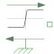

SignForceConstant force changing sign with speed |

|
Information
This information is part of the Modelica Standard Library maintained by the Modelica Association.
Model of constant force which changes sign with direction of movement.
Please note:
Positive force accelerates in both directions of movement.
Negative force brakes in both directions of movement.
Around zero speed regularization avoids numerical problems.
Parameters (4)
| useSupport |
Value: false Type: Boolean Description: = true, if support flange enabled, otherwise implicitly grounded |
|---|---|
| f_nominal |
Value: Type: Force (N) Description: Nominal force (if negative, force is acting as load) |
| reg |
Value: Modelica.Blocks.Types.Regularization.Exp Type: Regularization Description: Type of regularization |
| v0 |
Value: Type: Velocity (m/s) Description: Regularization below v0 |
Connectors (2)
Used in Examples (3)
|
Modelica.Electrical.Machines.Examples.InductionMachines Test example: InductionMachineSquirrelCage with inverter driving a conveyor |
|
|
Modelica.Magnetic.FundamentalWave.Examples.BasicMachines.InductionMachines Induction machine with squirrel cage and inverter driving a conveyor |
|
|
Modelica.Magnetic.QuasiStatic.FundamentalWave.Examples.BasicMachines.InductionMachines Induction machine with squirrel cage and inverter driving a conveyor |